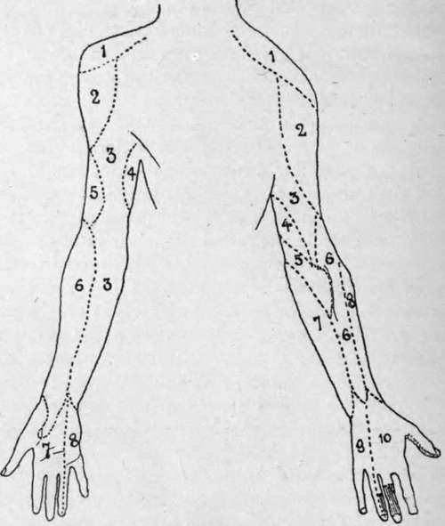

The Nerves Of The Upper Extremity
Description
This section is from the book "Surgical Anatomy", by John A. C. MacEwen. Also available from Amazon: Surgical Anatomy.
The Nerves Of The Upper Extremity
The spinal origins of the nerves supplying the muscles of the upper limb are : adductors and abductors of shoulder (circumflex, supra- and subscapulars), fifth and sixth cervical ; flexors of elbow (musculo-cutaneous), fifth, sixth, and seventh cervical ; extensors of elbow (musculo-spiral), sixth, seventh, and eighth cervical ; flexors of wrist and hand (median group), sixth and seventh cervical ; flexors of wrist and hand (ulnar group), seventh and eighth cervical, first dorsal ; extensors of wrist and hand, and supinators (musculo - spiral and posterior interosseous), sixth, seventh, and eighth cervical.
The median nerve supplies the flexor sublimis digitorum (and part of the flexor profundus by the anterior interosseous), the abductor, opponens, and half of the flexor brevis pollicis (superficial), and first and second lumbricals.
The ulnar nerve supplies part of the flexor profundus digitorum, and all the small muscles of the hand not supplied by the median.
The anterior interosseous of the median supplies the flexor longus pollicis, pronator quadratus, and part of the flexor-prof undus.
As to sensation : The palmar aspect of the thumb and two and a half outer fingers is supplied by the median, the remaining one¿and a half by the ulnar.
Dorsally, the thumb is supplied by the radial, as well as the first phalanges of the index, middle, and radial side of the ring finger. The second and third phalanges of the index, middle, and half of the ring fingers are supplied by the median. The ulnar side of the ring and the whole of the little finger are supplied by the ulnar.
The musculo-spiral nerve arises from the fifth to the eighth cervical nerves. It gives off internal and upper and lower external cutaneous branches in the upper arm ; supplies the triceps and anconeus from the musculo-spiral groove, and the brachialis anticus, supinator longus, and extensor carpi radialis longior after piercing the external intermuscular septum. Its posterior interosseous branch in the forearm supplies the extensor carpi radialis brevior, supinator brevis, extensors of the fingers and thumb, and extensor carpi ulnaris muscle, while the radial branch is purely sensory.
The nerve is frequently injured in fractures of the humerus, owing to its close relationship to the bone, and by undue pressure on the arm or on the axilla (as in crutch paralysis). When paralysis of the nerve occurs the extensors of the limb are affected, causing drop-wrist, and the supinators are likewise affected, while the flexors suffer from want of co-operation. Where the lesion occurs below the middle of the forearm, the triceps escapes. Sensation may be quite unaffected.
The median nerve arises from the sixth to the eighth cervical and first dorsal. In the forearm it lies between the superficial and deep muscles, and gives off muscular branches to the pronator radii teres, flexor carpi radialis, flexor sublimis digitorum, and palmaris longus. while the anterior interosseous branch supplies the outer half of the flexor profundus, flexor longus pollicis, and pronator quadratus. At the wrist it lies between the flexor carpi radialis and flexor sublimis, gives off the palmar cutaneous above the annular ligament, under which it passes to enter the palm, where it divides into its terminal branches, after supplying the abductor, opponens, and superficial head of the flexor brevis pollicis. The inner and outer terminal branches supply the two first lumbricals, and sensation to the palmar aspect of the thumb, index, middle, and half of the ring finger, and to the dorsal aspect of the terminal phalanx of the thumb, and of the two terminal phalanges of the index, middle, and half of the ring finger.
In the palm the median nerve lies under the superficial palmar arch, but in the fingers its branches are superficial to the digital arteries.
Paralysis of the nerve is most often produced by wounds of the forearm or wrist, and produces inability to completely pronate the forearm, and, when flexion of the wrist is attempted, produces ulnar adduction. The thumb is extended and adducted, and flexion and apposition are impossible, while wasting of the thenar eminence is marked. Flexion of the terminal phalanges of the index and middle fingers (supplied by the outer portion of the flexor profundus) is impossible, as is likewise flexion of all the second phalanges (supplied by sublimis and profundus together). Flexion of the first phalanges, with, at the same time, extension of the two distal phalanges, is possible, from the action of the interossei and two outer lumbricales, while the flexor brevis minimi digiti will also act. Sensation may be completely lost in the parts supplied, or may be almost unaffected.
Fig. 61.-Cutaneous Nerves of Arm.
Front. | Back. | |
1. | Supra-acromial. | 1. Supra-acromial. |
2. | Circumflex. | 2. Circumflex. |
3. | Int. cutan. | 3. Int. cutan, of musculo-spiral. |
4. | Int. cutan, of musculo-spiral and | 4. Intercosto-humeral. |
intercosto-humeral. | 5. Lesser int. cutaneous (Wrisberg). | |
5. | Ext. cutan, of musculo-spiral. | 6. Ext. cutan, of musculo-spiral. |
6. | Musculo-cutan. | 7. Internal cutan. |
7. | Median. | 8. Musculo-cutan. |
8. | Ulnar. | 9. Ulnar. |
to. Radial. | ||
Parts shaded : Median. |
The ulnar nerve arises from the eighth cervical and the first dorsal. It gives off articular filaments to the elbow-joint, and enters the forearm between the heads of the flexor carpi ulnaris, giving off thereafter motor branches to the flexor carpi ulnaris and inner half of the flexor profundus digitorum. Below the centre of the forearm it gives off a palmar cutaneous branch, which supplies the hypothenar eminence and central area of the palm, and a dorsal cutaneous branch, which communicates with the radial, and supplies the dorsum of the hand on its ulnar side, and also the dorsum of the little finger, and of the ulnar border of the ring finger. The trunk enters the palm by crossing the annular ligament superficially, and divides into superficial and deep branches, the former supplying the palmaris brevis, and the hypothenar skin and skin of the little finger, and ulnar border of the ring finger on both palmar and dorsal aspects. The deep branch supplies all the interossei, two inner lumbricales, and all the outer short muscles of the hand, except the abductor, opponens, and half of the flexor brevis of the thumb.
The ulnar nerve is most often damaged about the elbow, but may also be wounded about the wrist. In paralysis of the nerve, flexion of the wrist is accompanied by radial deviation. The thumb cannot be adducted, and the little finger is almost completely paralyzed, the hypothenar eminence atrophying. The ring finger cannot be flexed at the metacarpo-phalangeal joint, nor extended at the interphalangeal joints, owing to paralysis of the interossei and inner lumbricales, while the index and ring fingers, partly supplied by the two outer lumbricales, are less markedly affected.
In the later stages a claw-hand is developed from the unrestrained action of the flexors and extensors, producing overextension of the first and flexion of the second and third phalanges.
As in the other nerves described, loss of sensation is often partial, owing probably to the overlapping of the sensory areas supplied by the various nerves.
Erb's brachial paralysis is one which affects the deltoid, biceps, brachialis anticus, supinator longus, and sometimes the supra- and infraspinati and supinator brevis. It is due to injury to, pressure upon, or disease of either (a) the motor columns of the cord supplying particularly the fifth and sixth cervical roots, or (b) that part of the brachial plexus where the motor tracts for the involved muscles have not yet divided into the different nerve trunks.
Erb's point, which lies fully ½ inch anterior to the border of the trapezius on a line from the sterno-clavicular articulation to the seventh cervical spine, is that selected for stimulation of the affected muscles.
A somewhat similar condition is met with in infancy, due probably to traction on the cords of the brachial plexus, from pulling on the head of the child during delivery and exerting great pressure on the supraclavicular fossa. The arm is rotated markedly inwards, the ulnar border of the hand presenting anteriorly, the position resembling that found in subspinous dislocation of the shoulder. This condition may persist to adult life and cause much limitation of movement of the affected limb.
Continue to: